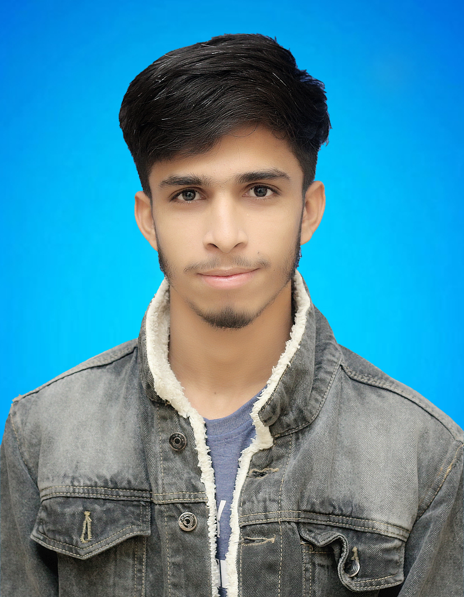

Curriculum vitae (CV)

ABOUT ME
Experienced sales executive
with s successful full track record
of meeting and exceeding sales goals.
Proven ability to build a strong
relationships and drive revenue
Education
- INTERMEDIATE
- November 2022 - October 2024
GNHSE Muhammad Bux Noor Pur
- MATRICULATION
- January 2020 - September 2022
GNHSE Muhammad Bux Noor Pur
Experience
Sales Executive
I have worked as a sales
executive for 4 years
and I believe that
this experienced has perpared
me for
this positison.
Web Development
I have experience creating
websites using HTML and CSS. I can
build simple, clean, and responsive web
pages. Passionate about learning more
and improving my web development skills.
Skills
Programming
HTML , CSS
General Skills
Ms Office, E- Commerce, Management,
Digital Maketing, Web Development,
Photoshop, Adobe Illustrator
General Skills
Internship, Project Management,
Creative Probelm Solving, Enterpreneurship
Innovative Thinking
Contact Me
03272498778
wajidhassan292@gmail.com
Sachal Goth Near PCSIR Lab Karachi